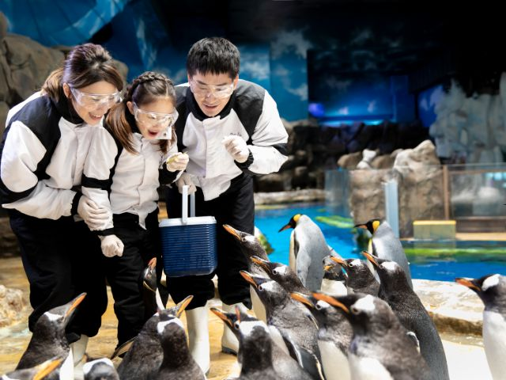
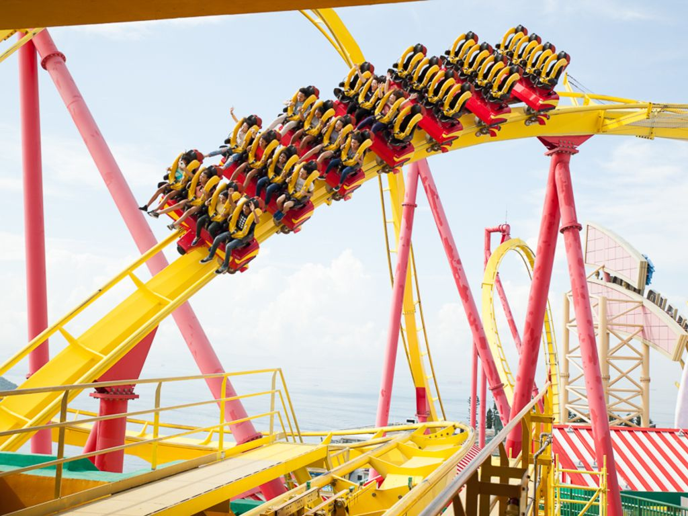

熱門景點

暢遊香港海洋公園
一家大小暢玩香港海洋公園 ，是不少本地人的童年美好回憶。這個開幕超過40年的世界級主題樂園，不僅有輕鬆和刺激的遊樂設施、餐飲場所，還有不少寓教於樂的體驗活動，是親子同遊的好去處。
 天星小輪
登上百年傳統的天星小輪，短短10分鐘，你可以完全沉醉在絕美的海港景色之中。天星小輪在過去一個多世紀以來，一直接載香港市民往返香港島和九龍，儘管如今已有多條海底隧道及地鐵貫通，仍有許多市民鍾情於小輪每天搭乘穿梭維港。不少遊客也愛搭上一趟平價質優的小輪，一來能夠體驗舊日香港風情，二來又可欣賞海上的日落美景，還有夜晚的璀璨燈海，這也難怪《國家地理旅遊雜誌》會把搭乘天星小輪遊覽維港列為「人生50個必遊項目」之一。
天際100香港觀景台
想不想以嶄新角度觀賞著名的維港景致，站在繁華鬧巿之巔，360°全方位欣賞香港壯麗的天際線？到全港最高的室內觀景台 - 天際100香港觀景台，你就能得償所願！登上這個位於香港最高大廈環球貿易廣場100樓的觀景台，你將猶如置身於半空中，能夠無阻礙的環迴俯瞰香港和九龍半島的景致。白天，每座大廈都像是伸手可及；到了晚上，燦爛炫目的夜景則令人驚嘆！ 觀景台內還有其他設施，其中包括在天際動感虛擬體驗區的VR時光倒流香港遊，帶你重返香港舊時光；天際100「港」故事的28米巨型互動故事牆，讓你了解100個鮮為人知的香港故事；「愛在天際」光影匯演，配合維港兩岸璀璨的夜景，為你帶來前所未有的視覺享受；還有由香港麗思卡爾頓酒店主理的Café 100 by The Ritz-Carlton, Hong Kong，在迷人的景緻襯托下，為你提供精緻美食，給你不一樣的高空體驗！